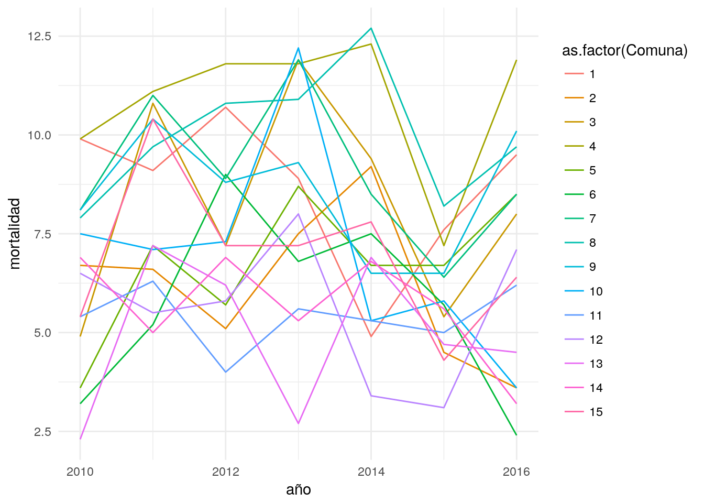
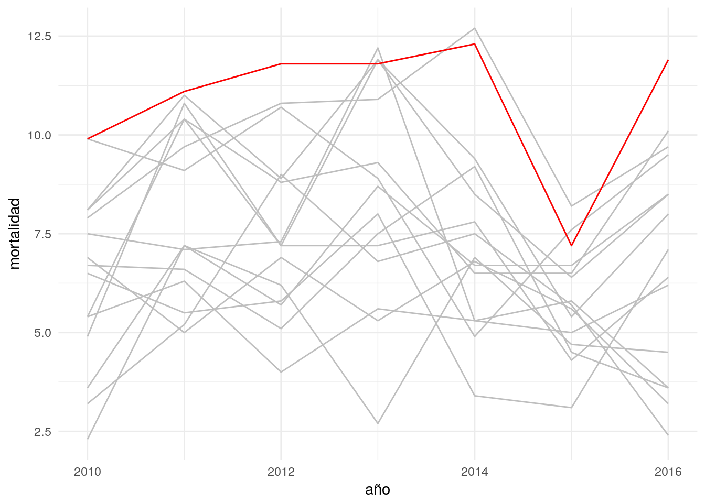
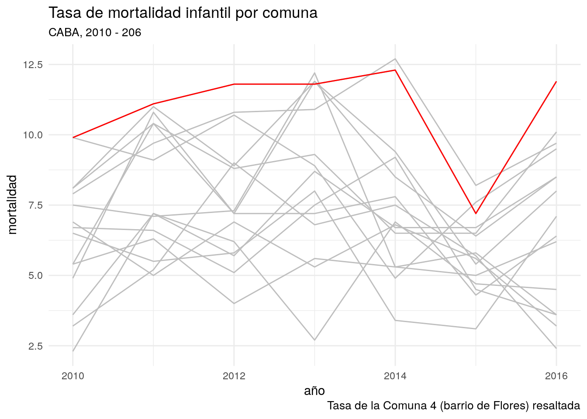

Capítulo 1 Una presentación a toda marcha de R
R es un lenguaje de programación especializado en análisis y visualización de datos. Es un producto de código abierto, lo cual significa que cualquier persona puede usarlo y modificarlo sin pagar licencias ni costos de adquisición de ningún tipo.
Expertos de todo el mundo colaboran en forma activa con el proyecto, no sólo desarrollando el lenguaje en sí (llamado “R base”), sino también extendiéndolo con nuevas habilidades que pueden ser incorporadas por los usuarios finales en forma de “paquetes” de funciones que pueden ser instaladas.
La calidad del lenguaje en sí, de los paquetes instalables que le agregan un sinfin de funciones (desde algoritmos de inteligencia artificial hasta la generación de mapas interactivos) y de la comunidad de usuarios que comparte información en foros y blogs, ha hecho de R uno de los lenguajes de pogramación más populares del mundo. En el campo del análisis de datos, es la herramienta por excelencia en muchas universidades, empresas de tecnología, y redacciones de periodismo de datos.
1.1 A investigar: ¿Cual es la diferencia en mortalidad infantil entre el sur y el norte de la Ciudad Autónoma de Buenos Aires?
Buenos Aires es una ciudad que desde hace décadas presenta una marcada polarización entre sus barrios del sur, relativamente menos desarrollados, y los del norte donde el nivel socioeconómico y la calidad de vida son mayores.
Figura 1.1: Artículo en la edición online de El País
Uno de los aspectos más lamentables de la disparidad norte-sur, y sin duda de los que más polémica y acusaciones cruzadas ha generado, es la diferencia en la tasa de mortalidad infantil de acuerdo a la región de la ciudad.
¿Qué tan grande es esa diferencia? ¿Cómo ha evolucionado en los últimos años, y como se distribuye geográficamente?
Vamos a utilizar R para responder esas preguntas y visualizar los resultados de nuestro análisis, utilizando como fuente cifras oficiales publicada por la ciudad.
1.2 R en acción
Vamos a recorrer un ejemplo de lo que somos capaces de hacer cuando manejamos con soltura una herramienta de análisis como R. Que nadie se preocupe si algunas de las operaciones parecen no tener sentido, o resultan arbitrarias. ¡Es normal! Nadie aprende un lenguaje en 10 minutos, sea R o esperanto. La idea es tener exposición temprana a un caso de uso interesante, usando datos reales. Y que nos sirva como motivación para practicar luego ejercicios básicos que son muy necesarios pero, a veces, no tan emocionantes.
1.2.1 Crear un proyecto en RStudio
El primer paso es ejecutar RStudio, que ya deberíamos tener disponible en nuestro sistema.
Una vez abierta la interfaz gráfica, creamos un proyecto nuevo, cliqueando en File -> New Project... -> New Directory -> New Project. En la ventana que surge, elegir un nombre para el proyecto (por ejemplo, “Practicando R”) y finalizar la operación cliqueando en Create project.
Utilizar proyectos nos permite continuar otro día desde donde dejamos la tarea al terminar una sesión. Es sólo cuestion de recuperar el proyecto deseado la próxima vez que abrimos RStudio, cliqueando en File -> Recent Projects -> "nombre de mi proyecto".
Por ahora, sigamos trabajando. Vamos a crear un “script”. Un script, como su nombre en inglés lo indica, es un guión; una serie de pasos que escribimos para que nuestra computradora ejecute en secuencia. Cliqueamos en File -> New File -> R Script. De inmediato se abre una ventana con un editor de texto. ¡Ahora empieza la acción!
1.2.2 Escribiendo un script
Aprovechemos para dar un nombre a los áreas que vemos en RStudio:

Figura 1.2: La interfaz de RStudio
Vamos a escribir nuestro código (las instrucciones que R entiende) en el panel de edición. Los resultados van a aparecer en la consola (cuando se trate de texto) o en el panel de salida (cuando produzcamos gráficos)
library(dplyr)mortalidad <- read.csv('data/mortalidad_infantil_caba.csv')
mortalidad## Comuna X2010 X2011 X2012 X2013 X2014 X2015 X2016
## 1 1 9.9 9.1 10.7 8.9 4.9 7.6 9.5
## 2 2 6.7 6.6 5.1 7.5 9.2 4.5 3.6
## 3 3 4.9 10.8 7.2 11.9 9.4 5.4 8.0
## 4 4 9.9 11.1 11.8 11.8 12.3 7.2 11.9
## 5 5 3.6 7.2 5.7 8.7 6.7 6.7 8.5
## 6 6 3.2 5.2 9.0 6.8 7.5 5.7 2.4
## 7 7 8.1 11.0 8.9 11.9 8.5 6.4 8.5
## 8 8 7.9 9.7 10.8 10.9 12.7 8.2 9.7
## 9 9 8.1 10.4 8.8 9.3 6.5 6.5 10.1
## 10 10 7.5 7.1 7.3 12.2 5.3 5.8 3.6
## 11 11 5.4 6.3 4.0 5.6 5.3 5.0 6.2
## 12 12 6.5 5.5 5.8 8.0 3.4 3.1 7.1
## 13 13 2.3 7.2 6.2 2.7 6.9 4.7 4.5
## 14 14 6.9 5.0 6.9 5.3 6.8 5.6 3.2
## 15 15 5.4 10.4 7.2 7.2 7.8 4.3 6.4mortalidad <- mortalidad %>% gather("año", mortalidad, X2010:X2016)
mortalidad## Comuna año mortalidad
## 1 1 X2010 9.9
## 2 2 X2010 6.7
## 3 3 X2010 4.9
## 4 4 X2010 9.9
## 5 5 X2010 3.6
## 6 6 X2010 3.2
## 7 7 X2010 8.1
## 8 8 X2010 7.9
## 9 9 X2010 8.1
## 10 10 X2010 7.5
## 11 11 X2010 5.4
## 12 12 X2010 6.5
## 13 13 X2010 2.3
## 14 14 X2010 6.9
## 15 15 X2010 5.4
## 16 1 X2011 9.1
## 17 2 X2011 6.6
## 18 3 X2011 10.8
## 19 4 X2011 11.1
## 20 5 X2011 7.2
## 21 6 X2011 5.2
## 22 7 X2011 11.0
## 23 8 X2011 9.7
## 24 9 X2011 10.4
## 25 10 X2011 7.1
## 26 11 X2011 6.3
## 27 12 X2011 5.5
## 28 13 X2011 7.2
## 29 14 X2011 5.0
## 30 15 X2011 10.4
## 31 1 X2012 10.7
## 32 2 X2012 5.1
## 33 3 X2012 7.2
## 34 4 X2012 11.8
## 35 5 X2012 5.7
## 36 6 X2012 9.0
## 37 7 X2012 8.9
## 38 8 X2012 10.8
## 39 9 X2012 8.8
## 40 10 X2012 7.3
## 41 11 X2012 4.0
## 42 12 X2012 5.8
## 43 13 X2012 6.2
## 44 14 X2012 6.9
## 45 15 X2012 7.2
## 46 1 X2013 8.9
## 47 2 X2013 7.5
## 48 3 X2013 11.9
## 49 4 X2013 11.8
## 50 5 X2013 8.7
## 51 6 X2013 6.8
## 52 7 X2013 11.9
## 53 8 X2013 10.9
## 54 9 X2013 9.3
## 55 10 X2013 12.2
## 56 11 X2013 5.6
## 57 12 X2013 8.0
## 58 13 X2013 2.7
## 59 14 X2013 5.3
## 60 15 X2013 7.2
## 61 1 X2014 4.9
## 62 2 X2014 9.2
## 63 3 X2014 9.4
## 64 4 X2014 12.3
## 65 5 X2014 6.7
## 66 6 X2014 7.5
## 67 7 X2014 8.5
## 68 8 X2014 12.7
## 69 9 X2014 6.5
## 70 10 X2014 5.3
## 71 11 X2014 5.3
## 72 12 X2014 3.4
## 73 13 X2014 6.9
## 74 14 X2014 6.8
## 75 15 X2014 7.8
## 76 1 X2015 7.6
## 77 2 X2015 4.5
## 78 3 X2015 5.4
## 79 4 X2015 7.2
## 80 5 X2015 6.7
## 81 6 X2015 5.7
## 82 7 X2015 6.4
## 83 8 X2015 8.2
## 84 9 X2015 6.5
## 85 10 X2015 5.8
## 86 11 X2015 5.0
## 87 12 X2015 3.1
## 88 13 X2015 4.7
## 89 14 X2015 5.6
## 90 15 X2015 4.3
## 91 1 X2016 9.5
## 92 2 X2016 3.6
## 93 3 X2016 8.0
## 94 4 X2016 11.9
## 95 5 X2016 8.5
## 96 6 X2016 2.4
## 97 7 X2016 8.5
## 98 8 X2016 9.7
## 99 9 X2016 10.1
## 100 10 X2016 3.6
## 101 11 X2016 6.2
## 102 12 X2016 7.1
## 103 13 X2016 4.5
## 104 14 X2016 3.2
## 105 15 X2016 6.4mortalidad <- mortalidad %>% mutate(año = sub('X', "", año),
año = as.integer(año))
mortalidad## Comuna año mortalidad
## 1 1 2010 9.9
## 2 2 2010 6.7
## 3 3 2010 4.9
## 4 4 2010 9.9
## 5 5 2010 3.6
## 6 6 2010 3.2
## 7 7 2010 8.1
## 8 8 2010 7.9
## 9 9 2010 8.1
## 10 10 2010 7.5
## 11 11 2010 5.4
## 12 12 2010 6.5
## 13 13 2010 2.3
## 14 14 2010 6.9
## 15 15 2010 5.4
## 16 1 2011 9.1
## 17 2 2011 6.6
## 18 3 2011 10.8
## 19 4 2011 11.1
## 20 5 2011 7.2
## 21 6 2011 5.2
## 22 7 2011 11.0
## 23 8 2011 9.7
## 24 9 2011 10.4
## 25 10 2011 7.1
## 26 11 2011 6.3
## 27 12 2011 5.5
## 28 13 2011 7.2
## 29 14 2011 5.0
## 30 15 2011 10.4
## 31 1 2012 10.7
## 32 2 2012 5.1
## 33 3 2012 7.2
## 34 4 2012 11.8
## 35 5 2012 5.7
## 36 6 2012 9.0
## 37 7 2012 8.9
## 38 8 2012 10.8
## 39 9 2012 8.8
## 40 10 2012 7.3
## 41 11 2012 4.0
## 42 12 2012 5.8
## 43 13 2012 6.2
## 44 14 2012 6.9
## 45 15 2012 7.2
## 46 1 2013 8.9
## 47 2 2013 7.5
## 48 3 2013 11.9
## 49 4 2013 11.8
## 50 5 2013 8.7
## 51 6 2013 6.8
## 52 7 2013 11.9
## 53 8 2013 10.9
## 54 9 2013 9.3
## 55 10 2013 12.2
## 56 11 2013 5.6
## 57 12 2013 8.0
## 58 13 2013 2.7
## 59 14 2013 5.3
## 60 15 2013 7.2
## 61 1 2014 4.9
## 62 2 2014 9.2
## 63 3 2014 9.4
## 64 4 2014 12.3
## 65 5 2014 6.7
## 66 6 2014 7.5
## 67 7 2014 8.5
## 68 8 2014 12.7
## 69 9 2014 6.5
## 70 10 2014 5.3
## 71 11 2014 5.3
## 72 12 2014 3.4
## 73 13 2014 6.9
## 74 14 2014 6.8
## 75 15 2014 7.8
## 76 1 2015 7.6
## 77 2 2015 4.5
## 78 3 2015 5.4
## 79 4 2015 7.2
## 80 5 2015 6.7
## 81 6 2015 5.7
## 82 7 2015 6.4
## 83 8 2015 8.2
## 84 9 2015 6.5
## 85 10 2015 5.8
## 86 11 2015 5.0
## 87 12 2015 3.1
## 88 13 2015 4.7
## 89 14 2015 5.6
## 90 15 2015 4.3
## 91 1 2016 9.5
## 92 2 2016 3.6
## 93 3 2016 8.0
## 94 4 2016 11.9
## 95 5 2016 8.5
## 96 6 2016 2.4
## 97 7 2016 8.5
## 98 8 2016 9.7
## 99 9 2016 10.1
## 100 10 2016 3.6
## 101 11 2016 6.2
## 102 12 2016 7.1
## 103 13 2016 4.5
## 104 14 2016 3.2
## 105 15 2016 6.4ggplot(mortalidad) +
geom_line(aes(x = año, y = mortalidad, group = Comuna, color = as.factor(Comuna))) +
theme_minimal()
ggplot(mortalidad) +
geom_line(aes(x = año, y = mortalidad, group = Comuna), color = "gray") +
geom_line(data = filter(mortalidad, Comuna == 4),
aes(x = año, y = mortalidad, group = Comuna), color = "red") +
theme_minimal()
ggplot(mortalidad) +
geom_line(aes(x = año, y = mortalidad, group = Comuna), color = "gray") +
geom_line(data = filter(mortalidad, Comuna == 4),
aes(x = año, y = mortalidad, group = Comuna), color = "red") +
theme_minimal() +
labs(title = "Tasa de mortalidad infantil por comuna",
subtitle = "CABA, 2010 - 206",
caption = "Tasa de la Comuna 4 (barrio de Flores) resaltada")